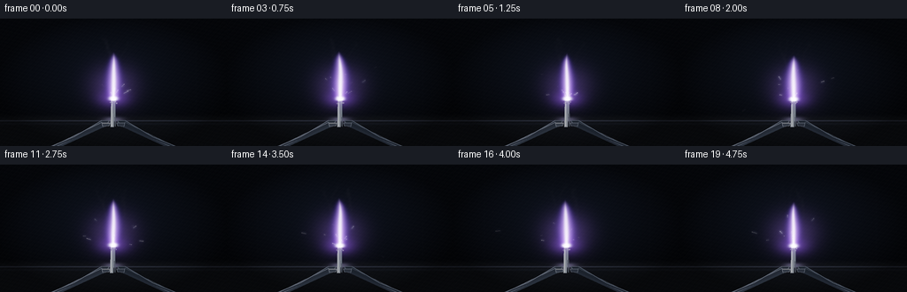
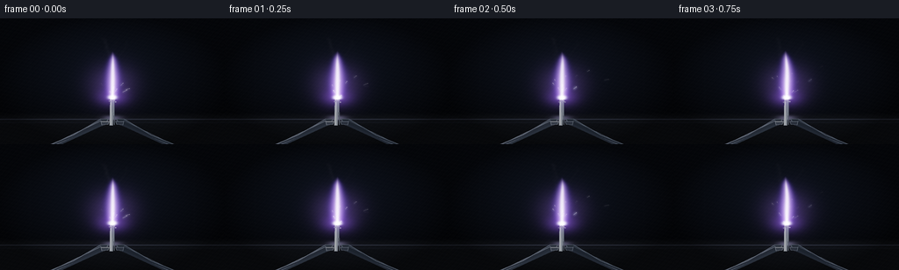
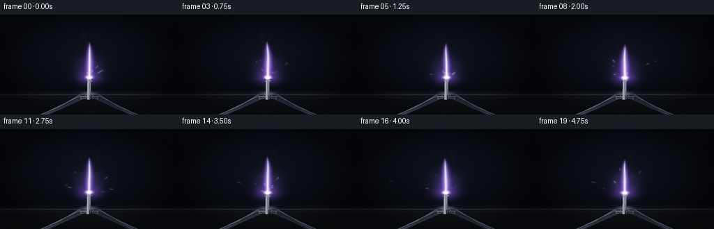
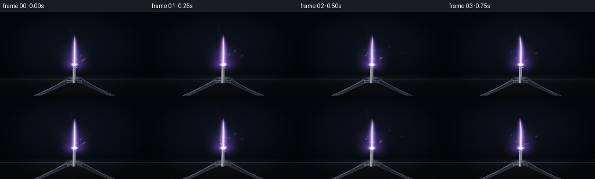

CODING AGENTS AS PIXEL WORLD MODELS
traex/DeepSeek-V4.1-Flash · phygen_127
点击播放 · 原生 RGB 像素
逐轮保存的候选
回放视频、检查图与代码变化。
每份候选均可单独播放。实际图片检查记录在下方工具轨迹中。
候选 01播放与检查图
点击播放 · 原生 RGB 像素


展开代码变化
--- 上一保存版本
+++ 本次保存版本
@@ -0,0 +1,335 @@
+from pathlib import Path
+
+import numpy as np
+from PIL import Image, ImageDraw, ImageFilter
+
+import artifact_io
+
+
+CASE_DIR = Path(__file__).resolve().parent
+OUT_W, OUT_H = 256, 144
+FPS, FRAME_COUNT = 4.0, 20
+SS = 3
+W, H = OUT_W * SS, OUT_H * SS
+
+
+def smoothstep(edge0, edge1, value):
+ t = np.clip((value - edge0) / (edge1 - edge0), 0.0, 1.0)
+ return t * t * (3.0 - 2.0 * t)
+
+
+def screen_color(rgb, color, alpha):
+ return rgb + color * alpha[..., None] * (1.0 - np.clip(rgb, 0.0, 1.0))
+
+
+def polygon(draw, points, fill, outline=None, width=1):
+ draw.polygon([(int(x * W), int(y * H)) for x, y in points], fill=fill, outline=outline, width=width)
+
+
+def line(draw, points, fill, width=1):
+ draw.line([(int(x * W), int(y * H)) for x, y in points], fill=fill, width=width, joint="curve")
+
+
+def make_background(xx, yy, tip_x, tip_y, t):
+ top = np.array([0.020, 0.027, 0.044], dtype=np.float32)
+ bottom = np.array([0.010, 0.013, 0.021], dtype=np.float32)
+ rgb = top[None, None, :] * (1.0 - yy[..., None]) + bottom[None, None, :] * yy[..., None]
+
+ # A restrained, cool room light keeps the metal and tongs readable.
+ dx = xx - 0.48
+ dy = yy - 0.42
+ room_glow = np.exp(-(dx * dx / 0.19 + dy * dy / 0.26))
+ rgb += np.array([0.012, 0.018, 0.030], dtype=np.float32) * room_glow[..., None]
+
+ # Faint vertical seams imply a laboratory backdrop without adding visual clutter.
+ seam = 0.004 * (np.exp(-((xx - 0.135) / 0.004) ** 2) + np.exp(-((xx - 0.865) / 0.004) ** 2))
+ rgb += seam[..., None] * np.array([0.45, 0.58, 0.82], dtype=np.float32)
+
+ # Bench top and its polished front edge.
+ bench = smoothstep(0.745, 0.790, yy)
+ bench_tone = np.array([0.038, 0.045, 0.059], dtype=np.float32)
+ rgb = rgb * (1.0 - bench[..., None]) + bench_tone * bench[..., None]
+ grain = 0.005 * np.sin(yy * 900.0 + xx * 31.0) * bench
+ rgb += grain[..., None]
+ edge = np.exp(-((yy - 0.803) / 0.0045) ** 2)
+ rgb += edge[..., None] * np.array([0.11, 0.12, 0.16], dtype=np.float32)
+ lip = np.exp(-((yy - 0.827) / 0.007) ** 2)
+ rgb += lip[..., None] * np.array([0.018, 0.021, 0.030], dtype=np.float32)
+
+ # Flame-colored light pools on the bench and behind the ribbon.
+ halo = np.exp(-(((xx - tip_x) / 0.145) ** 2 + ((yy - (tip_y - 0.10)) / 0.23) ** 2) * 2.2)
+ flicker = 0.90 + 0.08 * np.sin(8.1 * t) + 0.03 * np.sin(19.3 * t)
+ rgb += halo[..., None] * np.array([0.19, 0.12, 0.31], dtype=np.float32) * flicker
+ reflection = np.exp(-(((xx - tip_x) / 0.055) ** 2 + ((yy - 0.792) / 0.025) ** 2) * 2.0)
+ rgb += reflection[..., None] * np.array([0.32, 0.30, 0.43], dtype=np.float32) * flicker
+
+ # Soft vignette and a tiny amount of sensor texture.
+ vignette = 1.0 - 0.52 * ((xx - 0.5) ** 2 / 0.25 + (yy - 0.5) ** 2 / 0.25) ** 1.25
+ rgb *= np.clip(vignette, 0.42, 1.0)[..., None]
+ texture = (np.sin(xx * 271.7 + yy * 133.1) + np.sin(xx * 91.3 - yy * 207.9)) * 0.0014
+ rgb += texture[..., None]
+ return np.clip(rgb, 0.0, 1.0)
+
+
+def draw_ribbon_and_tongs(t, tip_x, tip_y, flicker):
+ layer = Image.new("RGBA", (W, H), (0, 0, 0, 0))
+ draw = ImageDraw.Draw(layer)
+
+ # Gunmetal forceps enter from the lower corners and grip the ribbon base.
+ left_arm = [
+ (0.16, 1.04), (0.23, 1.02), (0.472, 0.842),
+ (0.482, 0.800), (0.448, 0.797), (0.326, 0.925), (0.145, 1.06),
+ ]
+ right_arm = [(1.0 - x, y) for x, y in left_arm]
+ polygon(draw, left_arm, (24, 29, 38, 255), (71, 79, 95, 255), 3)
+ polygon(draw, right_arm, (18, 23, 31, 255), (60, 69, 84, 255), 3)
+
+ # Long specular edges make the tongs feel machined.
+ line(draw, [(0.205, 1.025), (0.450, 0.814)], (98, 108, 127, 210), 3)
+ line(draw, [(0.795, 1.025), (0.550, 0.814)], (72, 82, 99, 180), 2)
+ line(draw, [(0.245, 1.018), (0.463, 0.840)], (28, 34, 44, 255), 7)
+ line(draw, [(0.755, 1.018), (0.537, 0.840)], (22, 27, 36, 255), 7)
+
+ # The strip is a pale magnesium alloy with a darker center and bright edge.
+ w_top, w_bottom = 0.0105, 0.0135
+ ribbon = [
+ (tip_x - w_top, tip_y + 0.004),
+ (tip_x + w_top, tip_y - 0.002),
+ (tip_x + 0.001, 0.851),
+ (tip_x - w_bottom, 0.851),
+ ]
+ polygon(draw, ribbon, (133, 143, 157, 255))
+ line(draw, [(tip_x - w_top * 0.70, tip_y + 0.010), (tip_x - w_bottom * 0.60, 0.847)],
+ (226, 230, 237, 240), 3)
+ line(draw, [(tip_x + w_top * 0.75, tip_y + 0.010), (tip_x + w_bottom * 0.63, 0.847)],
+ (68, 77, 91, 255), 3)
+ line(draw, [(tip_x + 0.0005, tip_y + 0.020), (tip_x + 0.001, 0.842)],
+ (101, 111, 126, 180), 2)
+
+ # A thin oxide crust sits immediately behind the incandescent tip.
+ crust_y = tip_y + 0.025
+ crust = np.array([0.74, 0.76, 0.79], dtype=np.float32)
+ for i in range(7):
+ px = tip_x + (i - 3) * 0.0045
+ py = crust_y + 0.008 * np.sin(i * 2.3 + t * 2.0)
+ color = tuple((np.clip(crust * (0.65 + 0.06 * i), 0.0, 1.0) * 255).astype(np.uint8)) + (170,)
+ draw.ellipse((int((px - 0.003) * W), int((py - 0.003) * H),
+ int((px + 0.003) * W), int((py + 0.003) * H)), fill=color)
+
+ # Foreground jaws overlap the strip just enough to make the grip unambiguous.
+ left_jaw = [(0.449, 0.818), (0.486, 0.818), (0.481, 0.844), (0.452, 0.848)]
+ right_jaw = [(1.0 - x, y) for x, y in left_jaw]
+ polygon(draw, left_jaw, (38, 44, 55, 255), (119, 128, 146, 220), 2)
+ polygon(draw, right_jaw, (29, 34, 44, 255), (91, 101, 118, 210), 2)
+ line(draw, [(0.452, 0.821), (0.483, 0.821)],
+ (150 + int(18 * flicker), 153 + int(18 * flicker), 174, 190), 2)
+ return np.asarray(layer, dtype=np.float32) / 255.0
+
+
+def composite_over(base, layer):
+ alpha = layer[..., 3:4]
+ return base * (1.0 - alpha) + layer[..., :3] * alpha
+
+
+def flame_emission(xx, yy, tip_x, tip_y, t):
+ height = 0.365 + 0.012 * np.sin(2.4 * t) + 0.006 * np.sin(7.7 * t + 0.7)
+ rel = (tip_y - yy) / height
+ valid = (rel >= -0.03) & (rel <= 1.02)
+ relc = np.clip(rel, 0.0, 1.0)
+
+ sway = (
+ 0.0042 * np.sin(2.2 * t + 2.6 * relc)
+ + 0.0025 * np.sin(6.5 * t + 5.0 * relc + 0.4)
+ + 0.0012 * np.sin(13.0 * t + 9.0 * relc)
+ ) * relc ** 1.45
+ center = tip_x + sway
+
+ width = (
+ 0.047
+ * (0.90 + 0.10 * np.sin(3.6 * t))
+ * np.sin(np.pi * (0.085 + 0.915 * relc)) ** 0.62
+ * (1.0 - 0.30 * relc)
+ )
+ width = np.maximum(width, 0.001)
+ dx = xx - center
+ d = np.abs(dx) / width
+
+ vertical = np.exp(-0.72 * relc) * (1.0 - smoothstep(0.80, 1.03, rel))
+ outer = np.exp(-1.42 * d * d) * vertical
+ middle = np.exp(-3.2 * d * d) * vertical
+ core_width = np.maximum(width * 0.30, 0.0012)
+ core = np.exp(-2.1 * (dx / core_width) ** 2) * np.exp(-0.42 * relc)
+ core *= 1.0 - smoothstep(0.67, 0.98, rel)
+
+ # A small lower lobe gives the flame a hot, attached base rather than a cutout edge.
+ base_r = ((xx - tip_x) / 0.026) ** 2 + ((yy - (tip_y - 0.004)) / 0.022) ** 2
+ base = np.exp(-2.5 * base_r)
+
+ pulse = 0.92 + 0.055 * np.sin(10.7 * t) + 0.025 * np.sin(23.1 * t + 1.1)
+ outer_rgb = np.array([0.34, 0.15, 0.92], dtype=np.float32) * 0.52
+ middle_rgb = np.array([0.86, 0.73, 1.00], dtype=np.float32) * 0.84
+ core_rgb = np.array([1.00, 0.985, 0.93], dtype=np.float32) * 1.34
+
+ emission = (
+ outer[..., None] * outer_rgb
+ + middle[..., None] * middle_rgb
+ + core[..., None] * core_rgb
+ ) * pulse
+ emission += base[..., None] * np.array([0.78, 0.91, 1.00], dtype=np.float32) * 1.05
+ emission *= valid[..., None]
+ return emission
+
+
+def tip_glow(xx, yy, tip_x, tip_y, t):
+ flicker = 0.93 + 0.05 * np.sin(12.7 * t) + 0.02 * np.sin(31.0 * t)
+ r2 = (xx - tip_x) ** 2 + (yy - (tip_y - 0.004)) ** 2
+ hot = np.exp(-r2 / (2.0 * 0.010 ** 2)) * 1.55 * flicker
+ violet = np.exp(-r2 / (2.0 * 0.040 ** 2)) * 0.30 * flicker
+ emission = hot[..., None] * np.array([1.00, 0.96, 0.86], dtype=np.float32)
+ emission += violet[..., None] * np.array([0.55, 0.28, 1.00], dtype=np.float32)
+ return emission
+
+
+def build_sparks(seed=2719):
+ rng = np.random.default_rng(seed)
+ particles = []
+ for i in range(92):
+ birth = rng.uniform(-0.55, 5.2)
+ life = rng.uniform(0.34, 1.45)
+ angle = rng.normal(-np.pi / 2.0, 0.48)
+ speed = rng.uniform(0.15, 0.43)
+ particles.append({
+ "birth": birth,
+ "life": life,
+ "x0": 0.5 + rng.normal(0.0, 0.006),
+ "y0": 0.635 + rng.normal(0.0, 0.008),
+ "vx": np.cos(angle) * speed + rng.normal(0.0, 0.025),
+ "vy": np.sin(angle) * speed,
+ "gravity": rng.uniform(0.16, 0.33),
+ "phase": rng.uniform(0.0, 2.0 * np.pi),
+ "size": rng.uniform(0.75, 1.55),
+ })
+ return particles
+
+
+SPARKS = build_sparks()
+
+
+def draw_sparks(t):
+ core = Image.new("RGB", (W, H), (0, 0, 0))
+ glow = Image.new("RGB", (W, H), (0, 0, 0))
+ core_draw = ImageDraw.Draw(core)
+ glow_draw = ImageDraw.Draw(glow)
+
+ for p in SPARKS:
+ age = t - p["birth"]
+ if age <= 0.0 or age >= p["life"]:
+ continue
+ fade = (1.0 - age / p["life"]) ** 1.35
+ flicker = 0.72 + 0.28 * np.sin(18.0 * age + p["phase"])
+ intensity = max(0.0, fade * flicker)
+
+ def pos(a):
+ return (
+ p["x0"] + p["vx"] * a,
+ p["y0"] + p["vy"] * a + 0.5 * p["gravity"] * a * a,
+ )
+
+ x1, y1 = pos(age)
+ x0, y0 = pos(max(0.0, age - 0.065))
+ if x1 < -0.03 or x1 > 1.03 or y1 < -0.03 or y1 > 1.03:
+ continue
+ x1p, y1p = int(x1 * W), int(y1 * H)
+ x0p, y0p = int(x0 * W), int(y0 * H)
+ c = int(np.clip(255 * intensity, 0, 255))
+ warm = (c, int(c * 0.96), int(c * 0.86))
+ cool = (int(c * 0.72), int(c * 0.79), c)
+ glow_draw.line((x0p, y0p, x1p, y1p), fill=cool, width=max(2, int(2 * p["size"])))
+ core_draw.line((x0p, y0p, x1p, y1p), fill=warm, width=max(1, int(p["size"])))
+ r = max(1, int(p["size"] * 1.2))
+ core_draw.ellipse((x1p - r, y1p - r, x1p + r, y1p + r), fill=warm)
+
+ core_arr = np.asarray(core, dtype=np.float32) / 255.0
+ glow_blur = glow.filter(ImageFilter.GaussianBlur(3.2))
+ glow_arr = np.asarray(glow_blur, dtype=np.float32) / 255.0
+ return core_arr * 1.20, glow_arr * 0.95
+
+
+def draw_smoke(t, tip_x, tip_y):
+ smoke = Image.new("RGBA", (W, H), (0, 0, 0, 0))
+ draw = ImageDraw.Draw(smoke)
+ for wisp in range(7):
+ phase = wisp * 0.91
+ base_x = tip_x + (wisp - 3) * 0.013 + 0.003 * np.sin(t * 1.3 + phase)
+ points = []
+ for j in range(18):
+ f = j / 17.0
+ y = tip_y - 0.07 - f * (0.40 + 0.02 * np.sin(phase))
+ x = (
+ base_x
+ + 0.028 * f * np.sin(2.7 * f + 0.55 * t + phase)
+ + 0.013 * f * np.sin(7.3 * f - 0.9 * t + phase * 1.7)
+ + (wisp - 3) * 0.004 * f
+ )
+ points.append((x, y))
+ alpha = int(15 + 5 * (0.5 + 0.5 * np.sin(1.7 * t + phase)))
+ line(draw, points, (128, 122, 142, alpha), 3 + (wisp % 3))
+ smoke = smoke.filter(ImageFilter.GaussianBlur(4.2))
+ return np.asarray(smoke, dtype=np.float32) / 255.0
+
+
+def add_bloom(rgb, emission, t):
+ emissive = np.clip(emission, 0.0, 4.0)
+ img = Image.fromarray((np.clip(emissive, 0.0, 1.0) * 255).astype(np.uint8))
+ wide = np.asarray(img.filter(ImageFilter.GaussianBlur(8.0)), dtype=np.float32) / 255.0
+ medium = np.asarray(img.filter(ImageFilter.GaussianBlur(3.0)), dtype=np.float32) / 255.0
+ flicker = 0.94 + 0.04 * np.sin(9.7 * t + 0.4)
+ rgb += emissive
+ rgb += wide * np.array([0.50, 0.34, 1.10], dtype=np.float32) * 0.34 * flicker
+ rgb += medium * np.array([0.88, 0.78, 1.00], dtype=np.float32) * 0.25
+ return rgb
+
+
+def render_frame(index):
+ t = index / FPS
+ yy, xx = np.mgrid[0:1:complex(H), 0:1:complex(W)].astype(np.float32)
+ tip_x = 0.500 + 0.0014 * np.sin(1.3 * t) + 0.0007 * np.sin(5.7 * t + 0.8)
+ tip_y = 0.632 + 0.010 * (t / 4.75) + 0.0012 * np.sin(4.1 * t)
+ flicker = 0.93 + 0.05 * np.sin(9.3 * t) + 0.025 * np.sin(20.1 * t + 0.7)
+
+ rgb = make_background(xx, yy, tip_x, tip_y, t)
+ object_layer = draw_ribbon_and_tongs(t, tip_x, tip_y, flicker)
+ rgb = composite_over(rgb, object_layer)
+
+ smoke = draw_smoke(t, tip_x, tip_y)
+ smoke_alpha = smoke[..., 3:4] * 0.70
+ rgb = rgb * (1.0 - smoke_alpha) + smoke[..., :3] * smoke_alpha
+
+ emission = flame_emission(xx, yy, tip_x, tip_y, t) + tip_glow(xx, yy, tip_x, tip_y, t)
+ spark_core, spark_glow = draw_sparks(t)
+ emission += spark_core + spark_glow
+ rgb = add_bloom(rgb, emission, t)
+
+ # Filmic shoulder, gentle gamma, and a whisper of grain.
+ rgb = 1.0 - np.exp(-rgb * 1.36)
+ rgb = np.power(np.clip(rgb, 0.0, 1.0), 0.93)
+ grain = (
+ np.sin(xx * 517.1 + yy * 283.7 + index * 1.7)
+ + np.sin(xx * 173.9 - yy * 631.3 + index * 0.9)
+ ) * 0.0020
+ rgb = np.clip(rgb + grain[..., None], 0.0, 1.0)
+ return rgb
+
+
+def main():
+ frames = []
+ for index in range(FRAME_COUNT):
+ highres = render_frame(index)
+ image = Image.fromarray((highres * 255.0 + 0.5).astype(np.uint8))
+ image = image.resize((OUT_W, OUT_H), Image.Resampling.LANCZOS)
+ frames.append(np.asarray(image, dtype=np.uint8))
+ artifact_io.save(np.stack(frames), CASE_DIR)
+
+
+if __name__ == "__main__":
+ main()
候选 02播放与检查图
点击播放 · 原生 RGB 像素


展开代码变化
--- 上一保存版本
+++ 本次保存版本
@@ -57,9 +57,9 @@
rgb += lip[..., None] * np.array([0.018, 0.021, 0.030], dtype=np.float32)
# Flame-colored light pools on the bench and behind the ribbon.
- halo = np.exp(-(((xx - tip_x) / 0.145) ** 2 + ((yy - (tip_y - 0.10)) / 0.23) ** 2) * 2.2)
+ halo = np.exp(-(((xx - tip_x) / 0.112) ** 2 + ((yy - (tip_y - 0.09)) / 0.19) ** 2) * 2.4)
flicker = 0.90 + 0.08 * np.sin(8.1 * t) + 0.03 * np.sin(19.3 * t)
- rgb += halo[..., None] * np.array([0.19, 0.12, 0.31], dtype=np.float32) * flicker
+ rgb += halo[..., None] * np.array([0.13, 0.085, 0.24], dtype=np.float32) * flicker
reflection = np.exp(-(((xx - tip_x) / 0.055) ** 2 + ((yy - 0.792) / 0.025) ** 2) * 2.0)
rgb += reflection[..., None] * np.array([0.32, 0.30, 0.43], dtype=np.float32) * flicker
@@ -145,7 +145,7 @@
center = tip_x + sway
width = (
- 0.047
+ 0.039
* (0.90 + 0.10 * np.sin(3.6 * t))
* np.sin(np.pi * (0.085 + 0.915 * relc)) ** 0.62
* (1.0 - 0.30 * relc)
@@ -155,9 +155,9 @@
d = np.abs(dx) / width
vertical = np.exp(-0.72 * relc) * (1.0 - smoothstep(0.80, 1.03, rel))
- outer = np.exp(-1.42 * d * d) * vertical
- middle = np.exp(-3.2 * d * d) * vertical
- core_width = np.maximum(width * 0.30, 0.0012)
+ outer = np.exp(-1.72 * d * d) * vertical
+ middle = np.exp(-4.3 * d * d) * vertical
+ core_width = np.maximum(width * 0.235, 0.0012)
core = np.exp(-2.1 * (dx / core_width) ** 2) * np.exp(-0.42 * relc)
core *= 1.0 - smoothstep(0.67, 0.98, rel)
@@ -166,8 +166,8 @@
base = np.exp(-2.5 * base_r)
pulse = 0.92 + 0.055 * np.sin(10.7 * t) + 0.025 * np.sin(23.1 * t + 1.1)
- outer_rgb = np.array([0.34, 0.15, 0.92], dtype=np.float32) * 0.52
- middle_rgb = np.array([0.86, 0.73, 1.00], dtype=np.float32) * 0.84
+ outer_rgb = np.array([0.30, 0.12, 0.88], dtype=np.float32) * 0.40
+ middle_rgb = np.array([0.82, 0.64, 1.00], dtype=np.float32) * 0.68
core_rgb = np.array([1.00, 0.985, 0.93], dtype=np.float32) * 1.34
emission = (
@@ -175,7 +175,7 @@
+ middle[..., None] * middle_rgb
+ core[..., None] * core_rgb
) * pulse
- emission += base[..., None] * np.array([0.78, 0.91, 1.00], dtype=np.float32) * 1.05
+ emission += base[..., None] * np.array([0.78, 0.91, 1.00], dtype=np.float32) * 0.80
emission *= valid[..., None]
return emission
@@ -285,8 +285,8 @@
medium = np.asarray(img.filter(ImageFilter.GaussianBlur(3.0)), dtype=np.float32) / 255.0
flicker = 0.94 + 0.04 * np.sin(9.7 * t + 0.4)
rgb += emissive
- rgb += wide * np.array([0.50, 0.34, 1.10], dtype=np.float32) * 0.34 * flicker
- rgb += medium * np.array([0.88, 0.78, 1.00], dtype=np.float32) * 0.25
+ rgb += wide * np.array([0.46, 0.30, 1.08], dtype=np.float32) * 0.22 * flicker
+ rgb += medium * np.array([0.88, 0.78, 1.00], dtype=np.float32) * 0.19
return rgb
可观测工具轨迹
实际执行的命令与返回图片。
命令 1exit 0
/bin/bash -c "pwd && rg --files -g 'prompt.txt' -g 'GENERATION_RULES.md' -g 'task_spec.json' -g '"'!**/.git/**'"'"
命令 2exit 0
/bin/bash -c "find . -maxdepth 2 -type f -printf '%p\\n' | sort | head -200"
命令 3exit 0
/bin/bash -c 'cat prompt.txt'
命令 4exit 0
/bin/bash -c 'cat GENERATION_RULES.md'
命令 5exit 0
/bin/bash -c 'cat task_spec.json'
命令 6exit 0
/bin/bash -c "sed -n '1,240p' artifact_io.py && printf '\\n---PLAYER---\\n' && sed -n '1,260p' player_template.html"
命令 7exit 0
/bin/bash -c 'python generate.py'
命令 8exit 0
/bin/bash -c "python - <<'PY'
from PIL import Image
import numpy as np
for f in [0,5,10,15,19]:
im=np.asarray(Image.open(f'frames/{f:02d}.png')).astype(float)/255
y=np.asarray(Image.fromarray((im.mean(2)*255).astype('uint8')).resize((64,32),Image.Resampling.BOX))
chars=' .,:;irsXA253hMHGS#9B&@'
print('\\nFRAME',f,'mean',im.mean().round(4),'max',im.max().round(3))
for row in y:
print(''.join(chars[min(len(chars)-1,int(v/256*len(chars)))] for v in row))
PY"命令 9exit 0
/bin/bash -c 'command -v chafa || true; command -v viu || true; command -v ffmpeg || true; ls -lh frames pixels.npz index.html inspection.png transition_check.png'
命令 10exit 0
/bin/bash -c "python - <<'PY'
from PIL import Image
import numpy as np
from pathlib import Path
for i in [0,5,10,15,19]:
a=np.asarray(Image.open(Path('frames')/f'{i:02d}.png'))
print(i, 'shape',a.shape, 'percentiles', np.percentile(a,[1,25,50,75,90,99,99.9]).round(1).tolist())
# average RGB in central flame crop, background, tongs
print(' crop flame',a[35:95,105:150].mean((0,1)).round(1).tolist(),'bg',a[10:35,10:50].mean((0,1)).round(1).tolist(),'maxpix',a.reshape(-1,3).max(0).tolist())
PY"命令 11exit 0
/bin/bash -c "python - <<'PY'
from PIL import Image
import numpy as np
for i in [0,10,19]:
a=np.asarray(Image.open(f'frames/{i:02d}.png'))
print('\\nFRAME',i)
for y in range(15,112,3):
row=''
for x in range(88,168,2):
r,g,b=a[y,x]
lum=(int(r)+int(g)+int(b))/3
if b>r*1.3 and b>g*1.1 and lum>20: c='V'
elif r>g*1.2 and r>b*1.05 and lum>60: c='O'
elif lum>220: c='@'
elif lum>150: c='#'
elif lum>90: c='*'
elif lum>50: c='+'
elif lum>25: c='.'
elif lum>15: c=','
else: c=' '
row+=c
print(f'{y:3d} {row}')
PY"命令 12exit 0
/bin/bash -c "python - <<'PY'
from PIL import Image
import numpy as np
ims=[np.asarray(Image.open(f'frames/{i:02d}.png')).astype(float) for i in range(20)]
d=[np.abs(ims[i]-ims[i-1]).mean() for i in range(1,20)]
print('temporal mean abs diffs:', [round(x,2) for x in d])
print('range',round(min(d),2),round(max(d),2))
for box in [(100,20,156,90),(112,88,144,122),(0,105,256,144)]:
x0,y0,x1,y1=box
vals=[]
for i in [0,5,10,15,19]:
vals.append(round(ims[i][y0:y1,x0:x1].mean(),2))
print(box,vals)
PY"命令 13exit 0
/bin/bash -c 'python generate.py'
命令 14exit 0
/bin/bash -c "python - <<'PY'
from PIL import Image
import numpy as np
ims=[np.asarray(Image.open(f'frames/{i:02d}.png')).astype(float) for i in range(20)]
for i in [0,5,10,15,19]:
a=ims[i]
print(i,'mean',round(a.mean(),2),'p99',round(np.percentile(a,99),1),'crop',a[35:95,105:150].mean((0,1)).round(1).tolist())
print('diffs',[round(np.abs(ims[i]-ims[i-1]).mean(),2) for i in range(1,20)])
PY"命令 15exit 0
/bin/bash -c "python - <<'PY'
from PIL import Image
import numpy as np
for i in [0,10,19]:
a=np.asarray(Image.open(f'frames/{i:02d}.png'))
print('\\nFRAME',i)
for y in range(18,114,3):
row=''
for x in range(96,160,2):
r,g,b=a[y,x]
lum=(int(r)+int(g)+int(b))/3
if lum>225:c='@'
elif lum>160:c='#'
elif lum>95:c='*'
elif lum>55:c='+'
elif lum>32:c='o'
elif lum>22:c='.'
elif lum>14:c=','
else:c=' '
row+=c
print(f'{y:3d} {row}')
PY"命令 16exit 0
/bin/bash -c "python - <<'PY'
import base64, json, re
from pathlib import Path
import numpy as np
from PIL import Image
html=Path('index.html').read_text()
m=re.search(r'const DATA=(.*?),W=DATA.width',html)
assert m, 'payload missing'
data=json.loads(m.group(1))
assert (data['width'],data['height'],data['frames'],data['fps'])==(256,144,20,4.0)
def unpack(s):
return np.frombuffer(base64.b64decode(s),dtype='<u4').copy()
frames=[unpack(data['first'])]
for enc in data['deltas']:
f=frames[-1].copy(); p=unpack(enc); i=0
while i<len(p):
start,count=int(p[i]),int(p[i+1]); f[start:start+count]=p[i+2:i+2+count]; i+=2+count
frames.append(f)
frames=np.stack(frames).reshape(20,144,256)
assert len(data['deltas'])==19 and all(len(f)==144*256 for f in frames)
for i, f in enumerate(frames):
packed=(f>>16)&255
# compare packed channels against the PNGs through the same 24-bit values
png=np.asarray(Image.open(f'frames/{i:02d}.png'))
got=(png[...,0].astype(np.uint32)<<16)|(png[...,1].astype(np.uint32)<<8)|png[...,2].astype(np.uint32)
assert np.array_equal(f,got), i
with np.load('pixels.npz') as z:
assert z['pixels'].shape==(144,256,20)
print('payload/frame reconstruction: OK')
print('frames:',frames.shape,'fps:',data['fps'],'audio:',data['audio'])
print('caption:',data['caption'])
print('html bytes:',Path('index.html').stat().st_size)
PY
python -m py_compile generate.py
sha256sum pixels.npz index.html inspection.png"命令 17exit 0
/bin/bash -c "python - <<'PY'
import base64, json, re
from pathlib import Path
import numpy as np
from PIL import Image
html=Path('index.html').read_text(); data=json.loads(re.search(r'const DATA=(.*?),W=DATA.width',html).group(1))
def unpack(s): return np.frombuffer(base64.b64decode(s),dtype='<u4').copy()
frames=[unpack(data['first'])]
for enc in data['deltas']:
f=frames[-1].copy(); p=unpack(enc); i=0
while i<len(p):
start,count=int(p[i]),int(p[i+1]); f[start:start+count]=p[i+2:i+2+count]; i+=2+count
frames.append(f)
frames=np.stack(frames).reshape(20,144,256)
for i,f in enumerate(frames):
png=np.asarray(Image.open(f'frames/{i:02d}.png'))
got=(png[...,0].astype(np.uint32)<<16)|(png[...,1].astype(np.uint32)<<8)|png[...,2].astype(np.uint32)
print(i,np.array_equal(f,got),np.count_nonzero(f"'!=got))
if i==0:
q=np.argwhere(f!=got)[:5]; print(q.tolist()); print([(int(f[y,x]),int(got[y,x]),png[y,x].tolist()) for y,x in q])
PY'命令 18exit 0
/bin/bash -c "python - <<'PY'
import base64, json, re
from pathlib import Path
import numpy as np
html=Path('index.html').read_text(); data=json.loads(re.search(r'const DATA=(.*?),W=DATA.width',html).group(1))
def unpack(s): return np.frombuffer(base64.b64decode(s),dtype='<u4').copy()
frames=[unpack(data['first'])]
for enc in data['deltas']:
f=frames[-1].copy(); p=unpack(enc); i=0
while i<len(p):
start,count=int(p[i]),int(p[i+1]); f[start:start+count]=p[i+2:i+2+count]; i+=2+count
frames.append(f)
a=np.stack(frames).reshape(20,144,256)
with np.load('pixels.npz') as z:
b=z['pixels'].transpose(2,0,1).reshape(20,-1)
print('npz',z['pixels'].shape,z['pixels'].dtype,'payload',a.shape,a.dtype)
print('pixels match',np.array_equal(a,b))
print('spec',data['width'],data['height'],data['frames'],data['fps'],'audio',data['audio'])
print('caption',data['caption'])
PY"命令 19exit 0
/bin/bash -c "python - <<'PY'
import base64,json,re,numpy as np
from pathlib import Path
D=json.loads(re.search(r'const DATA=(.*?),W=DATA.width',Path('index.html').read_text()).group(1))
def u(s):return np.frombuffer(base64.b64decode(s),dtype='<u4').copy()
fs=[u(D['first'])]
for e in D['deltas']:
f=fs[-1].copy();p=u(e);i=0
while i<len(p):
s,c=int(p[i]),int(p[i+1]);f[s:s+c]=p[i+2:i+2+c];i+=2+c
fs.append(f)
a=np.stack(fs).reshape(20,144,256)
with np.load('pixels.npz') as z:
raw=z['pixels']
b=np.transpose(raw,(2,0,1)).reshape(20,144,256)
c=raw.reshape(-1)
print('equal',np.array_equal(a,b),'neq',np.count_nonzero(a"'!=b))
for fi in [0,1,2,10,19]:
print(fi,np.count_nonzero(a[fi]!=b[fi]),a[fi].min(),a[fi].max(),b[fi].min(),b[fi].max())
q=np.argwhere(a!=b)
print(q[:20])
for f,y,x in q[:10]:print(f,y,x,hex(int(a[f,y,x])),hex(int(b[f,y,x])))
print('"'first base flat vs raw first20',[(hex(int(a[0].ravel()[i])),hex(int(raw.reshape(-1)[i]))) for i in range(10)])
PY"命令 20exit 0
/bin/bash -c "python - <<'PY'
import base64,json,re
from pathlib import Path
import numpy as np
from PIL import Image
html=Path('index.html').read_text(); D=json.loads(re.search(r'const DATA=(.*?),W=DATA.width',html).group(1))
def u(s): return np.frombuffer(base64.b64decode(s),dtype='<u4').copy()
fs=[u(D['first'])]
for e in D['deltas']:
f=fs[-1].copy(); p=u(e); i=0
while i<len(p):
s,c=int(p[i]),int(p[i+1]); f[s:s+c]=p[i+2:i+2+c]; i+=2+c
fs.append(f)
a=np.stack(fs).reshape(20,144,256)
with np.load('pixels.npz') as z: b=np.transpose(z['pixels'],(2,0,1)).reshape(20,144,256)
assert np.array_equal(a,b)
assert all(np.array_equal(f, (lambda q: (q[...,0].astype(np.uint32)<<16)|(q[...,1].astype(np.uint32)<<8)|q[...,2].astype(np.uint32))(np.asarray(Image.open(f'frames/{i:02d}.png')))) for i,f in enumerate(a))
assert (D['width'],D['height'],D['frames'],D['fps'],D['audio'])==(256,144,20,4.0,None)
print('artifact validation: OK')
print('20 frames, 256x144, 4 fps, 5.0 seconds, RGB-only')
print('payload and pixels.npz reconstruct identically')
PY
python -m py_compile generate.py
ls -lh generate.py pixels.npz index.html inspection.png transition_check.png"保存候选 2 份；完成命令 20 次；可验证图片返回 0 张。原始 API 响应与完整日志保留在本地。